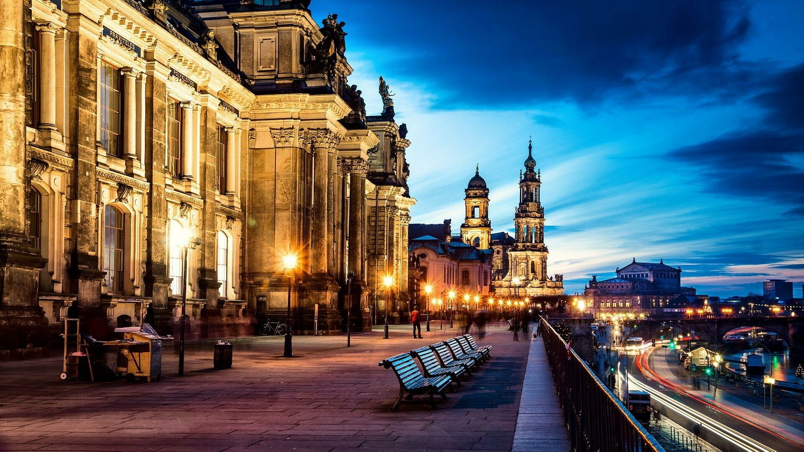
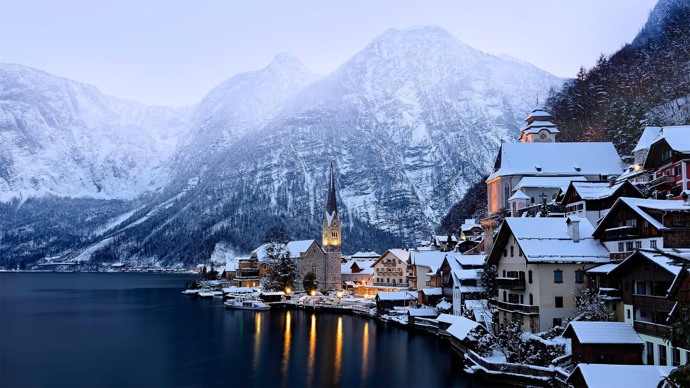

Deutschland
Deutschland ist ein Bundesstaat in Mitteleuropa. Es besteht aus 16 Ländern. Im Rahmen der Wiedervereinigung Deutschlands wurde Berlin 1990 Bundeshauptstadt und 1991 zum Parlaments- und Regierungssitz bestimmt. Das Land grenzt an neun Nachbarstaaten und liegt in der gemäßigten Klimazone zwischen Nord- und Ostsee im Norden sowie Bodensee und Alpen im Süden. Deutschland hat insgesamt neun Nachbarstaaten: Im Norden grenzt Deutschland an Dänemark, im Nordosten an Polen, im Osten an Tschechien, im Südosten an Österreich, im Süden an die Schweiz, im Südwesten an Frankreich, im Westen an Luxemburg und an Belgien und im Nordwesten an die Niederlande. Die Grenzlänge beträgt insgesamt 3876 Kilometer. Deutschland hat circa 83,6 Millionen Einwohner und zählt bei einer Fläche von 357.588 Quadratkilometern. Die bevölkerungsreichste deutsche Stadt ist Berlin. In Deutschland sind etwa 48.000 Tierarten nachgewiesen. Deutschland ist weltweit für die Entwicklung und Produktion von innovativen und hochwertigen PKW bekannt. Heute sind Konzerne wie Volkswagen, Mercedes-Benz und BMW ein wichtiger Bestandteil der deutschen Wirtschaft. In Deutschland gibt es 145 Fernsehsender.
Österreich
Österreich ist ein mitteleuropäischer Binnenstaat mit über 9,2 Millionen Einwohnern. Die angrenzenden Staaten sind Deutschland und Tschechien im Norden, die Slowakei und Ungarn im Osten, Slowenien und Italien im Süden sowie die Schweiz und Liechtenstein im Westen. Seit dem Jahre 1921 hat Österreich 9 Bundesländer: Vorarlberg, Tirol, Salzburg, Kärnten, Steiermark, Oberösterreich, Niederösterreich, Wien und das Burgenland. Das flächenmäßig größte Bundesland ist Niederösterreich, das einwohnerreichste Bundesland ist Wien. Das Bundesland Wien ist zugleich Bundeshauptstadt und auch einwohnerstärkste Stadt des Landes. Der höchste Berg des Landes ist der Großglockner. 43 % der Landesfläche sind bewaldet. Größere Banken in Österreich sind die Erste Group Bank AG, Raiffeisen Bank International AG, Unicredit Bank Austria sowie die BAWAG P.S.K. Österreich verfügt über eine moderne und leistungsfähige Industrie. Die österreichische Kultur ist vielschichtig geprägt; es gibt im Land zahlreiche Kulturdenkmale und zwölf UNESCO-Welterbestätten.
Schweiz

Die Schweiz ist ein föderalistischer, demokratischer Staat in Mitteleuropa. Er grenzt im Norden an Deutschland, im Osten an Österreich und Liechtenstein, im Süden an Italien und im Westen an Frankreich. In der Schweiz leben 8.962.258 Menschen auf 41.291 Quadratkilometern. Der Staat hat Anteil an drei grossen Sprachräumen. Deutsch, Französisch, Italienisch und Rätoromanisch sind die offiziellen Landessprachen der Schweiz. Die Schweizerische Eidgenossenschaft ist ein Bundesstaat, der aus sechsundzwanzig teilsouveränen Kantonen besteht. Sitz der Regierung und des Parlaments ist die Bundesstadt Bern. Die Landesgrenze der Schweiz hat eine Länge von total 1935 Kilometern. Geologisch wird die Schweiz in fünf Hauptregionen eingeteilt. Die Schweiz versteht sich als aussenpolitisch neutral. Die Schweizer Küche verbindet Einflüsse aus der deutschen, französischen und italienischen Küche. Sie ist regional sehr unterschiedlich.